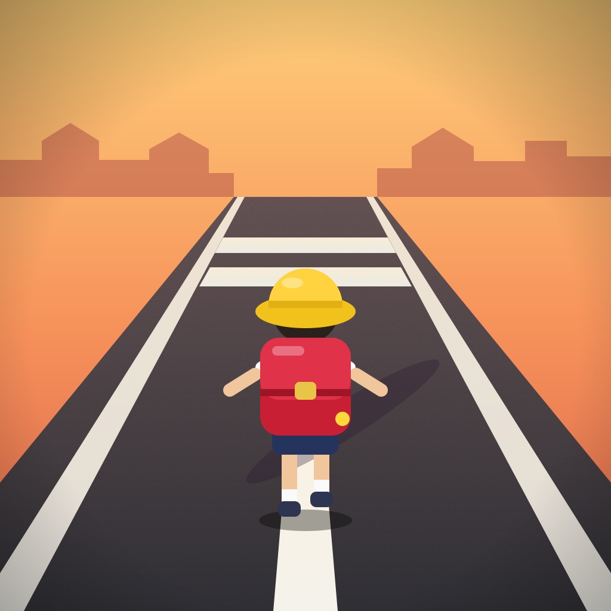

白線しか歩けない学校から家まで、白線だけで帰れるかな？ 白線からはみ出したらアウトの、あの下校の遊びがゲームになりました。
不具合のご報告やご質問は、メールでお送りください。お使いの端末と OS のバージョン、起きたことをお書きいただけると助かります。
cue41@outlook.jp（運営者: shii yui）
Q. セーブデータを消したい
ゲームの「せってい → セーブデータを消す」を2回押すと消えます。
Q. 「広告をけす」を買ったのに広告が出る
タイトル画面の「購入を復元」を押してください。
Q. 言語を変えたい
「せってい」の「🌐 Language」で日本語と英語を切り替えられます。
Can you get home from school walking only on the white lines? Step off them and you're out!
For bug reports or questions, please email us. It helps to include your device, OS version and what happened.
cue41@outlook.jp (operator: shii yui)
Q. How do I delete my save data?
Go to Settings → Delete Save Data and press it twice.
Q. I bought "Remove Ads" but still see ads.
Tap "Restore Purchases" on the title screen.
Q. How do I change the language?
Use "🌐 言語" in Settings to switch between English and Japanese.